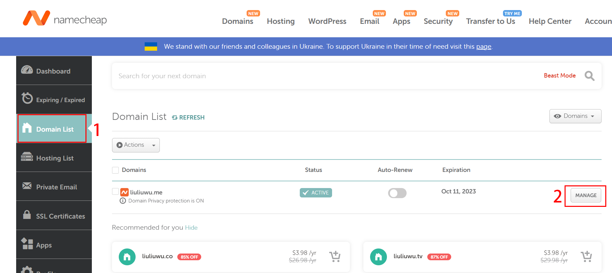
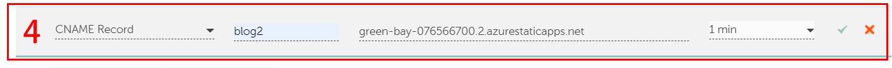
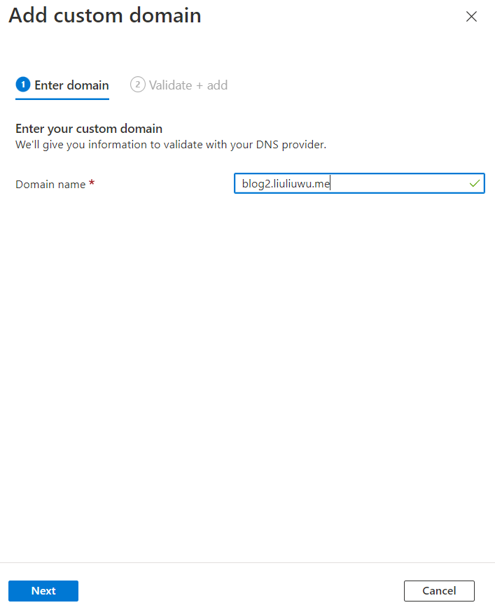
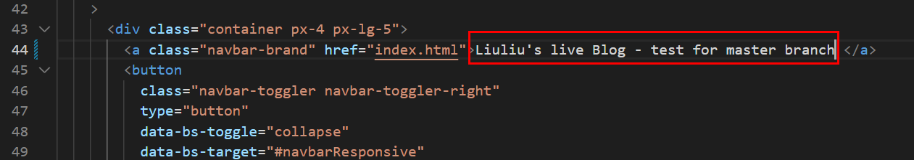
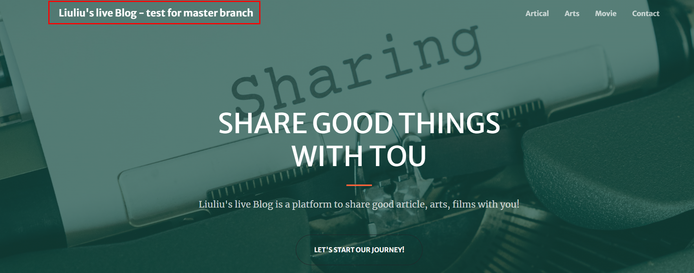

前提：需要使用 github 部署网页，需要自己写 html，css，JavaScript 代码，此方法并不适合零代码基础的小白来搭建自己的博客
此方法的优势：
直接与 GitHub
代码仓连结，修改代码完成提交即可实现网站的自动更新；
支持
https；
对博客的网页设计有全方位的掌控。
第一步，上传自己的博客内容代码
在 github 中上传自己的代码，以本文为例，上传至 live-blog2 代码仓的 master branch
第二步，利用 azure static web apps 部署网站
1. azure 注册/登陆账号
登陆https://portal.azure.com
，使用自己的微软账号登陆后，选择订阅方式：free trail
（需要有实体信用卡验证身份）或是自费（需要有实体信用卡或是借记卡）；
或者通过https://azure.microsoft.com/en-us/free/students/
选择 Azure for Students 登陆， Aszure for Students 和 free
trail 两者都可以可获得 200 美元的 Azure 产品和服务免费额度，以及
12 个月的热门免费服务 （github 提供给在校学生免费的资源库中包含了
Azure for Students 的学生包，如何获取？）
2. 新建资源 (create resource)，选择静态 Web 应用（static web apps）
3. 填写create static web app表单

3.1 subsription: 选择自己的订阅方式
free trail 或是 Purchase Options（自费） 或是 Azure for Students
3.2 resouce group：可以是之前建立的资源组，可以新建一个资源组
3.3 name：给自己的 app 取一个名字
3.4 hosting plan：a) free, b) standard
对于只是搭建博客来说，free 计划足够用，两者的区别是，standard
可以在自己的网页中添加用户的身份验证功能（Custom
authentication），以及私有终结点（private endpoint）
3.5 function api：选择服务器所在地区名称，优先选择离自己地区近的地方
3.6 deployment detail：本文以 github 作为部署方式
选择自己的
GitHub 账号，代码仓（repository），以及分支（branch）
3.7 build details：
build presets：选择自己网站的搭建框架，本文以自己写的
html，css，JavaScript 为例，选择“Custom”
app
location，搭建的代码在代码仓的所在位置，如果在根目录下，该空格填写“/”
api location 和 output location 默认不填写
3.8 review+create：点击创建即可
4. 创建完成之后会有如下所示界面，点击
browse，或是URL网址，可预览搭建好的网站

（可选）第三步，修改域名
1. 购买一个自己的域名（以“liuliuwu.me”为例，
本文通过 GitHub
学生包中 namecheap 提供的免费域名资格，如何获取？）
2. 在
namecheap 登陆账号后，在"Domain
List"菜单栏找到自己的域名选择“manage”，点击“Advanced
DNS”，增加一个新的“CNAME record”


host
为域名，可以是“www”，或是自己命名的其他单词如本文中的“blog2”
value
为初始网址“https://green-bay-076566700.2.azurestaticapps.net”除去“https://”后的部分，TTL
可以理解为设定网页的最长加载时间，本文设定的是 1min。
3. 回到azure网页，进入新建的static web app控制页面内，选择“custom
domain”
点击添加按钮“add”，有两个选项：“Azure DNS”和“other
DNS”
本文中使用的是 namecheap 提供的 DNS，因此点击第二个。
4. 在弹出的表单中填写域名（domain name）
由于在 namecheap
中添加CNAME record时，设定的host
name为“blog2”，因此表单中域名填写为“blog2.liuliuwu.me”，下一步点击
add，等待认证（该认证过程需要关闭网络代理 VPN
等服务，可能有延迟，如果显示验证失败，可以多等十几分钟后重复第4步骤重新验证）

5. 验证成功后，在“custom domain”页面显示了两条记录
6. 在网页中输入“https://blog2.liuliuwu.me”，验证绑定域名成功
第四步，更新网页内容
由于使用 static web apps 做网站部署时，会自动在 live-blog2 的
github 代码仓中，新建.github/workfolw/xxxx.yml 文件，而本地的
live-blog2 文件夹内，并不包含该文件，
如果直接对修改后的文件在终端使用
git push，live-blog2 的 github 代码仓中的.github/workfolw/xxxx.yml
文件将会消失，而该文件是同步更新 github 与 azure
静态网页的工作桥梁，消失后则无法实现自动更新网站内容。
2. 修改网页内容 
3.“git push”将commit之后的文件上传至master分支中
4. 通过github action 看到自动更新进程
5. 验证网页 